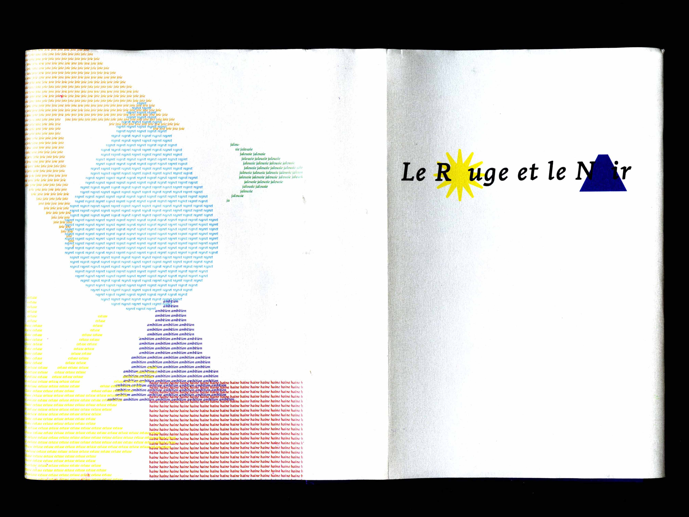
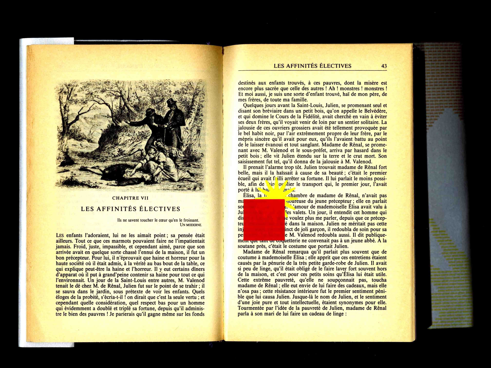
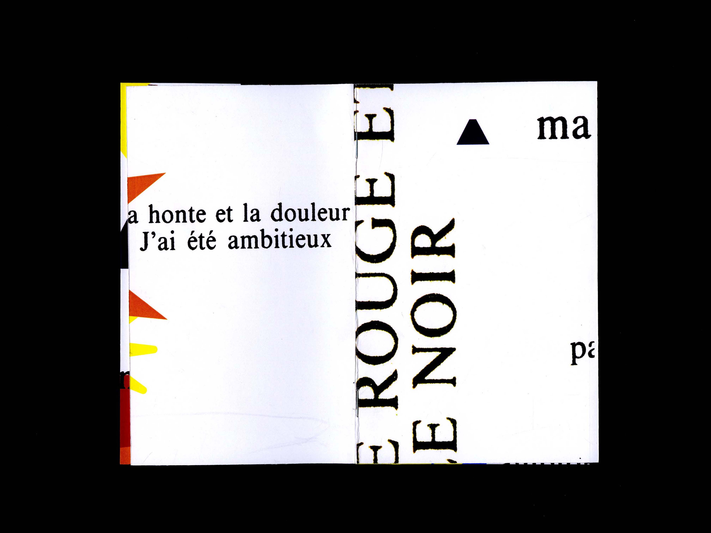
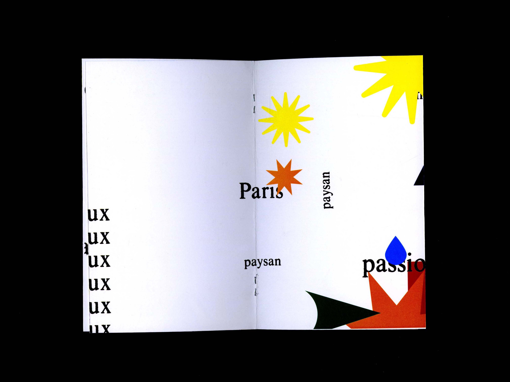

Couverture « Le rouge et le noir »





Projet de couveture pour Le rouge et le noir de Stendhal. La couverture s'appuie sur une série de signes reprenant les émotions présentes dans le roman. Chaque forme s'inspire de peinture d'entre le XVIème et le XVIIIème siècle. En plus, un "générique" du livre est présent au début du livre sous la forme d'un résumé du livre, les émotions prenant de plus en plus de place sur le reste (le texte). Pour finir, les formes interviennent directement sur le texte en se superposant pour montrer la domination de ses mêmes signes et de son emprise sur les personnages.
- Couverture (14x21cm)
- Livret (10x15cm)